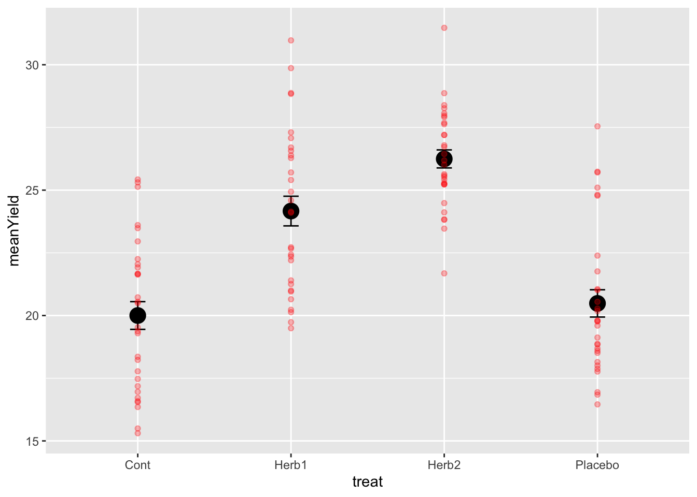
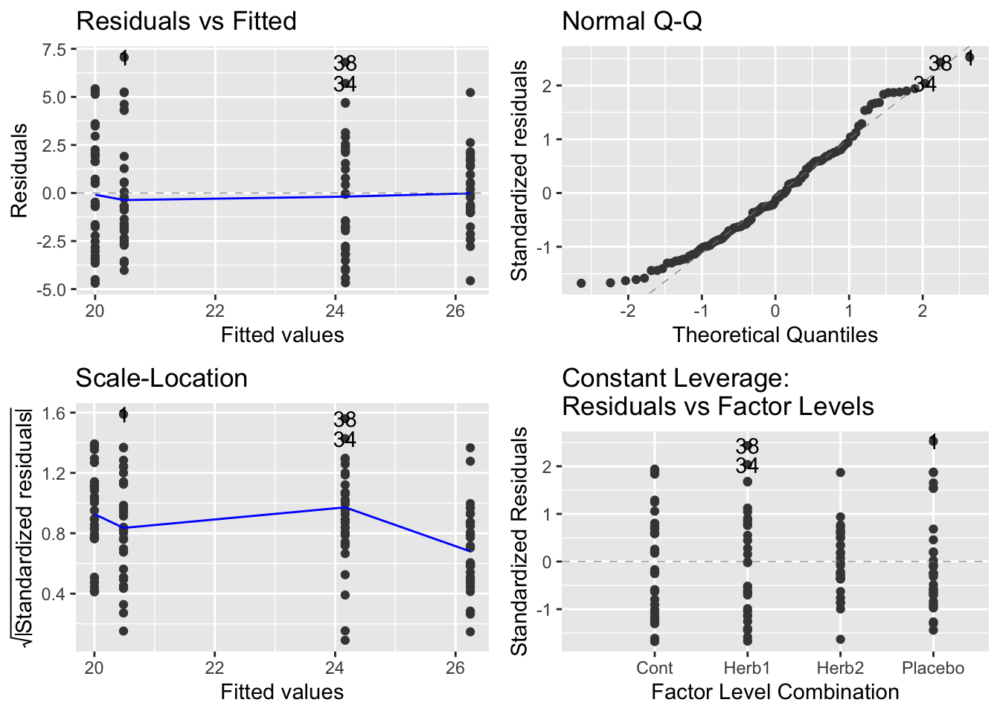

Chapter 5 A CRD (Completely Randomised Design) Example
We are now going to cheat by generating artificial data we we don’t have time to go run the experiment.
The experiment is about plant biomass yield under several herbicide treatments: a control and two herbicides, and a third treatment that is a placebo - applied water but no herbicide. Can you explain why we are using the placebo? As this is a 1-way ANOVA, what is the baseline hypothesis? Given that there is a control and two herbicides, are there alternative hypotheses you might test?
## treat
## Cont Herb1 Herb2 Placebo
## 30 30 30 30## plots r treat
## 1 1 1 Placebo
## 2 2 2 Placebo
## 3 3 1 Cont
## 4 4 3 Placebo
## 5 5 1 Herb2
## 6 6 2 Cont
## 7 7 1 Herb1
## 8 8 2 Herb2
## 9 9 3 Cont
## 10 10 4 Placebo5.0.1 Making up data
Right, lets make up some artificial data so we know the right answers – this is a very good way of checking you understand what’s going on.
First, lets define some randon variation centred around 0 with a standard deviation of 3:
#Our experimental errors, normal distribution mean = 0, standard deviation = 3
# rnorm is random normal distribution - the bell curve!
error <- rnorm(Total.units, mean=0, sd=3)Now we need to actually generate a response variable. The thing we ‘measured’. For this experiment we are measuring yield - the grams of dry biomass at the end of the experimental season.
To do this, we have to think about the mean of the yield (we’ll set it to 20), the deviation caused by Herbicide 1 (+5 average yield), the deviation caused by Herbicide 2 (+6 average yield) and the deviation caused by the placebo (nothing) and the error among observations (error). If this works, there should be Controls and Placebos with values around 20, and Herbicide values around ±25-26. But keep in mind… we have a standard deviation of 3 in the error… what will that do? Let’s see.
#the observations of yield
design$obs <-
# mean yield Control
20 +
# deviation caused by Herbicide 1
(design$treat=="Herb1") * 5 +
(design$treat == "Herb2") * 6 +
(design$treat == "Placebo")*1 +
error
# look at it
design$obs## [1] 27.54449 22.39018 18.23051 19.79473 23.46557 21.65736 26.56629 23.81627
## [9] 16.54628 21.05181 20.18325 19.37246 17.87311 19.52648 25.23731 27.07613
## [17] 21.63020 17.18181 21.91801 26.44057 28.06090 21.39988 17.47149 25.09810
## [25] 20.13330 25.22197 16.94093 26.01940 17.77562 19.73431 19.79704 24.14277
## [33] 25.58036 29.86591 25.24083 24.09997 23.83615 30.97192 18.87031 22.20412
## [41] 25.73515 23.60608 16.71508 24.11467 22.72169 26.28125 28.26384 17.76536
## [49] 19.59829 20.72473 18.68720 18.14632 21.01275 27.68217 24.81584 26.70132
## [57] 27.97160 20.99619 18.51138 15.30521 25.63561 25.30901 25.13462 16.95751
## [65] 22.25011 20.49172 22.35271 20.54817 21.66665 18.59150 25.42680 22.04539
## [73] 18.84271 22.66996 16.58391 22.43208 28.83779 25.42534 23.48403 19.12274
## [81] 25.70506 27.19873 19.49345 24.59278 25.40489 18.35542 21.68093 31.47204
## [89] 24.93807 25.52342 15.49615 24.77890 26.18496 27.30478 16.45685 28.38820
## [97] 28.86593 20.64912 18.00512 26.72388 19.29303 20.95731 21.25504 21.75950
## [105] 20.22908 26.78966 27.91346 20.27687 28.87266 19.76000 25.70526 25.29199
## [113] 27.20191 26.38800 27.62900 20.55045 16.84481 16.35176 22.95618 24.48285# look at the design now.
head(design)## plots r treat obs
## 1 1 1 Placebo 27.54449
## 2 2 2 Placebo 22.39018
## 3 3 1 Cont 18.23051
## 4 4 3 Placebo 19.79473
## 5 5 1 Herb2 23.46557
## 6 6 2 Cont 21.657365.0.2 Into the dplyr and ggplot pipeline.
Great stuff. Now we can move to our standard data management and visualisation pipeline.
- review the data
- sumamrise the data with dplyr - generate means and se’s for the treatments
- visualise with ggplot2
# check the data
glimpse(design)## Rows: 120
## Columns: 4
## $ plots <dbl> 1, 2, 3, 4, 5, 6, 7, 8, 9, 10, 11, 12, 13, 14, 15, 16, 17, 18, 1…
## $ r <int> 1, 2, 1, 3, 1, 2, 1, 2, 3, 4, 5, 4, 6, 5, 3, 2, 6, 7, 8, 4, 5, 3…
## $ treat <chr> "Placebo", "Placebo", "Cont", "Placebo", "Herb2", "Cont", "Herb1…
## $ obs <dbl> 27.54449, 22.39018, 18.23051, 19.79473, 23.46557, 21.65736, 26.5…# summarise to get means and ses
sumDat <- design %>%
group_by(treat) %>%
summarise(
meanYield = mean(obs),
seYield = sd(obs)/sqrt(n())
)
# plot the raw data and the mean±se
# start with the mean±se and then add the raw data
ggplot(sumDat, aes(x = treat, y = meanYield))+
geom_point(size = 5)+
geom_errorbar(data = sumDat, aes(ymin = meanYield - seYield, ymax = meanYield+seYield),
width = 0.1)+
geom_point(data = design, aes(x = treat, y = obs), colour = 'red', alpha = 0.3)
A few things to notice.
- The data are quite variable and the means of the herbicide treatments are roughly 5 and 6 units higher. This is as we expected….
- The standard errors are quite small! Why is that!?
- For those of you interested in some extra reading and thinking, the 95% Confidence Interval around the means can be calculated using
1.96*SE==1.96*sd(obs)/sqrt(n()). Go ahead and do that and look into that if you want…
5.1 The One-Way ANOVA.
If you’ve been paying attention, we’ve essentially designed and plotted the data for a 1-way ANOVA. These data are very similar to the daphnia parasite data we finished semester 1 with.
To analyse these data, we use the lm() function to build the model, check assumptions, and then make inference. Let’s go.
# the model
modYield <- lm(obs ~ treat, data = design)
# assumptions
autoplot(modYield)
# inference: anova
anova(modYield)## Analysis of Variance Table
##
## Response: obs
## Df Sum Sq Mean Sq F value Pr(>F)
## treat 3 807.49 269.164 33.257 1.383e-15 ***
## Residuals 116 938.85 8.094
## ---
## Signif. codes: 0 '***' 0.001 '**' 0.01 '*' 0.05 '.' 0.1 ' ' 1# contrasts
summary(modYield)##
## Call:
## lm(formula = obs ~ treat, data = design)
##
## Residuals:
## Min 1Q Median 3Q Max
## -4.6952 -2.1542 -0.3872 1.8383 7.0609
##
## Coefficients:
## Estimate Std. Error t value Pr(>|t|)
## (Intercept) 20.0004 0.5194 38.506 < 2e-16 ***
## treatHerb1 4.1655 0.7346 5.671 1.06e-07 ***
## treatHerb2 6.2449 0.7346 8.502 7.43e-14 ***
## treatPlacebo 0.4832 0.7346 0.658 0.512
## ---
## Signif. codes: 0 '***' 0.001 '**' 0.01 '*' 0.05 '.' 0.1 ' ' 1
##
## Residual standard error: 2.845 on 116 degrees of freedom
## Multiple R-squared: 0.4624, Adjusted R-squared: 0.4485
## F-statistic: 33.26 on 3 and 116 DF, p-value: 1.383e-155.1.1 Making insight and inference
Lets walks through things very discretely.
- Our graph suggests that herbicide treatments have an effect of increasing yield.
- Our model is designed to test this hypothesis - are any of the differences among means non-zero?
- Our hypothesis is probably really about whether the herbicide and placebos are differnt than the controls
- Our diagnostics are fantistic… the best you’ve ever seen.
- The Anova Table confirms that there are differences - we can reject the null hypothesis
- The summary table confirms that Herb1 and Herb2 are both larger than controls and the Placebo is not.
How do we interpret even more? The estimate associated with Control is 20! Just where it should be.
The estimates associated with Herb1, Herb2 and Placebo are the differences between the mean of these treatments and the control (the reference level!). These differences are positive for Herb1 and Herb2, close to 5 and 6 respectively (as expected) and this positive difference is not 0 via the statistical test.
However, the differnce for Placebo is close to 0 and therefore we can not reject the null hypothesis test that it differs from control. GENUIS!
5.2 A priori vs. Post-Hoc Contrasts
In the semester 1, we introduced how to do a Tukey Test.
This is known as an a posteriori test – testing the significance of things suggested by the experiment, also known as data snooping or data dredging. These are multiple comparison methods (Bonferroni, Scheffe method, Tukey honest significant difference, Duncan’s multiple range test) which try to control the chance of getting a significant result by chance.
To understand the risks of these, consider this experimental design. We have 7 treatments. With 7 treatments, there are 21 pairwise comparisons. With p-value threshold of \(0.05\) we expect 1/20 (5/100) tests to be significant. So with this 7 treatment and 21 comparison design, would you expect a signficant result by chance? You betyja.
This is why, unless a priori (in advance) you can justify ALL pairwise comparisons, a tukey test may not be appropriate.
Some statisticians really don’t like them “In my view multiple comparison methods have no place at all in the interpretation of data” Nelder (very well respected statistician).
5.2.1 The more appropriate approach.
The classical approach is to specify a priori (before experiment) a set of hypotheses then test them using contrasts. For our experiment, as noted above, we were probably interested in what our treatment contrasts provided - tests of difference with the control.
Specifying specific contrasts is easy once you get your head around the ‘structure’ of the syntax. Lets have a go with specifying a comparison JUST between Herbicide 1 and the control.
# check the levels and ORDERING of the treatments
levels(design$treat)## NULL# define the contrast you want using -1, 1 and 0's
# this says compare control with herbicide 1.... and ignore the Herb2 and Placebo
# we give the reference -1 and the 'other' 1.
contrast <- c(-1,1,0,0)
# use the fit.contrast function from gmodels
fit.contrast(modYield, "treat", contrast)## Estimate Std. Error t value Pr(>|t|)
## treat c=( -1 1 0 0 ) 4.165507 0.734555 5.67079 1.058335e-07
## attr(,"class")
## [1] "fit_contrast"# remind ourselves of the contrast from the summary table
summary(modYield)##
## Call:
## lm(formula = obs ~ treat, data = design)
##
## Residuals:
## Min 1Q Median 3Q Max
## -4.6952 -2.1542 -0.3872 1.8383 7.0609
##
## Coefficients:
## Estimate Std. Error t value Pr(>|t|)
## (Intercept) 20.0004 0.5194 38.506 < 2e-16 ***
## treatHerb1 4.1655 0.7346 5.671 1.06e-07 ***
## treatHerb2 6.2449 0.7346 8.502 7.43e-14 ***
## treatPlacebo 0.4832 0.7346 0.658 0.512
## ---
## Signif. codes: 0 '***' 0.001 '**' 0.01 '*' 0.05 '.' 0.1 ' ' 1
##
## Residual standard error: 2.845 on 116 degrees of freedom
## Multiple R-squared: 0.4624, Adjusted R-squared: 0.4485
## F-statistic: 33.26 on 3 and 116 DF, p-value: 1.383e-15Notice that the results are the same from the summary(modYield) and the fit.contrast.
If we want to compare the two herbicides we can use this approach. Note in advance that this contrast DOES NOT exist in the summary table!
# define the contrast you want using -1, 1 and 0's
# this says compare herb1 with herb2, ignoring the control and placebo.
# we give the reference -1 and the 'other' 1.
contrast <- c(0,-1,1,0)
# use the fit.contrast function from gmodels
fit.contrast(modYield, "treat", contrast)## Estimate Std. Error t value Pr(>|t|)
## treat c=( 0 -1 1 0 ) 2.079439 0.734555 2.830882 0.005473189
## attr(,"class")
## [1] "fit_contrast"Isn’t this cool? Note that the difference reported is the difference between the two means:
# check our summary data
sumDat## # A tibble: 4 × 3
## treat meanYield seYield
## <chr> <dbl> <dbl>
## 1 Cont 20.0 0.552
## 2 Herb1 24.2 0.591
## 3 Herb2 26.2 0.359
## 4 Placebo 20.5 0.544Here it is: \(26.2 - 24.2 = 2\)
This says that despite the difference we created of ~1 unit of yield between Herb1 and Herb2, when we defined error and generated the data, it created a significant difference detectable with statistics.
5.2.2 comparing the average of the herbicide effect with the control.
This might be a comparison you intended to make also… the average effect of herbicides in general. To do this, we expand the idea of -1,1 and 0’s to include 1/2s (and yes, 1/3’s and more are possible):
# define the contrast you want using -1, 1 and 0's
# this says compare control with the average of herbicide 1 and 2, ignoring the placebo
# we give the reference -1 and the 'other two' a 1/2 each.
contrast <- c(-1,1/2,1/2,0)
# use the fit.contrast function from gmodels
fit.contrast(modYield, "treat", contrast)## Estimate Std. Error t value Pr(>|t|)
## treat c=( -1 0.5 0.5 0 ) 5.205226 0.6361433 8.182475 4.015904e-13
## attr(,"class")
## [1] "fit_contrast"Again, checking sumDat
sumDat## # A tibble: 4 × 3
## treat meanYield seYield
## <chr> <dbl> <dbl>
## 1 Cont 20.0 0.552
## 2 Herb1 24.2 0.591
## 3 Herb2 26.2 0.359
## 4 Placebo 20.5 0.544\((24.2+26.2)/2 = 25.2\) –> \(25.2 - 20 = 5.2\)
5.2.3 writing this up…
Fill in these blanks using the various contrasts you made above!
We conclude that herbicides on average cause an _____ gram increase in yield (t = ___ , p = ___ ). We also note that there was a significant difference of _____ grams between the herbicides (t = _____ p = ______). The additional placebo treatment had no effect on yield (t = _______ p = __________).